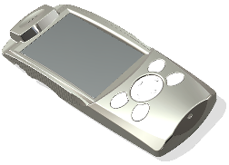
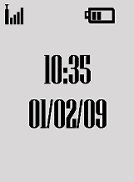
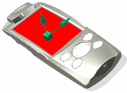
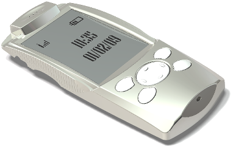

放置贴花
本例将展示如何选择一个图像并将其作为贴花放置到一个面。
|
 |
 |
|

-
在视图工具条上，从渲染样式列表中选择艺术外观 。
大多数可视化命令的完整效果只在将渲染样式设为艺术外观时可见。
-
在可视化形状工具条上，单击贴花 ，或选择视图→可视化→贴花。
贴花对话框将打开。
-
在名称组中，输入贴花的名称。
-
在图像组中，单击选择图像文件 并选择要用作贴花的图像。
-
在要贴花的对象组中，单击选择对象 并选择要放置贴花的模型面。

-
在放置组中，从锚点类型列表中选择中心。
-
目的
操作
在曲面上创建要固定放置位置的参考点。
在放置组中：
-
使用指定原点选项可创建一个点。
-
使用指定向上矢量选项可与贴花竖直对齐。
缩放贴花至不同大小。
在缩放组中，更改比例方法。
将特定颜色定义为透明。
在透明度组中，从色样中定义透明颜色并将 RGB 公差设为包含颜色值变化。
包含要设为透明的颜色值变化。
在透明度组中，将 RGB 公差设为包含颜色值变化。
要设置与部件不同并且明显比该示例中颜色要深的贴花材料。
在照明组中，选择使用贴花自身材料并单击编辑照明。
在材料编辑器对话框的常规选项卡中，选择类型为塑料，并从反光颜色样本中选择黑色。
调整贴花表面的峰值和谷值。
在位移组中，设置幅值的值来调整峰值和谷值。
控制模糊度
设置柔软度值来控制模糊度。
-
-
单击确定以放置贴花。
-
在高质量图像模式下查看对象。
-
在可视化形状工具条上，单击高质量图像
 ，或选择视图→可视化→高质量图像。
，或选择视图→可视化→高质量图像。高质量图像对话框将打开。
-
单击开始着色。
-
|

|
|
注释 |
|